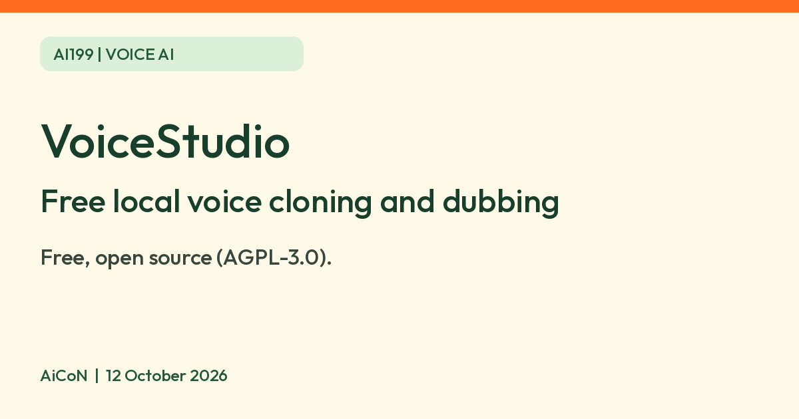

VoiceStudio: free open-source voice cloning and dubbing app that runs on your computer
VoiceStudio is a free, open-source desktop app for text to speech, voice cloning, dubbing and transcription. It runs on your own computer, per its developer.

What it is
VoiceStudio is a desktop app that turns text into speech, clones a voice from a short clip, transcribes audio, dubs video and makes audiobooks, through local engines on your own computer, according to the developer. Optional remote configurations are an exception. Its GitHub page calls itself an open-source alternative to ElevenLabs and says "No accounts. No API keys. No cloud." It supports 14 text-to-speech engines and 11 speech-recognition engines, and the page says its "646 languages" is a platform-wide figure: each engine covers fewer languages, so test the voice or language you need.
Is it free?
Yes. The GitHub page says "Free & open-source" under the AGPL-3.0 licence, with a separate commercial licence for proprietary use. The project's blog says everything in its feature list is in the free app, without putting the listed free features behind a paywall. There is also a closed-source Pro build for professionals. This guide does not quote or verify a checkout price for Pro. The developer says Pro is not needed for the listed free features. The real cost is a computer that can run it: see below.
What you need
- Windows 10, macOS 13.3 or later on Apple Silicon, or Ubuntu 24.04 or later. The page says Intel Macs are not supported for the local engines.
- At least 8 GB of RAM and 10 GB of free disk space for models. It recommends 16 GB or more of RAM.
- A graphics card is optional. The page says everything runs on the CPU, just more slowly.
- The pages do not list countries and we found no statement about India. We did not install it.
Privacy
The README advertises local processing and "No accounts. No API keys. No cloud." Those are developer statements, not an independent audit or a guarantee for every configuration.
- The optional OpenAI-compatible transcription engine sends audio to the configured remote server. A remote backend likewise runs work on another machine. Check the engine and destination before using private recordings.
- The website privacy page does not detail the README's optional app analytics, so do not read its local-first framing as zero traffic. The README says usage analytics are opt-in, off unless you accept, with a Settings privacy toggle. If accepted, anonymous/content-free generation and lifecycle statistics go to PostHog, including engine, language, timing, character count and error class. We did not inspect implementation or traffic.
- Models/dependencies must be downloaded. The blog says update checks and model downloads use the network. "Local" does not mean no network traffic at any stage.
We did not install, clone, dub, grant microphone permissions, run an engine, verify telemetry settings or test removal.
Voice cloning: use it with permission
The page says a few seconds of audio is usually enough to clone a voice. We did not find a consent/misuse rule in the README, but the Pro blog and acceptable-use page require the owner's say-so and exclude impersonation and fraud. The acceptable-use page asks users to retain permission, use signed releases for commercial cloning, and label synthetic audio where it could mislead. AiCoN advice: clone only your own voice or a voice whose owner has agreed, and do not use a cloned voice to mislead anyone. The page says the app can add an invisible audio watermark, using Meta's AudioSeal, to mark AI-made audio.
How to try it
- Open github.com/debpalash/VoiceStudio and follow the install guide for your system.
- Run the self-check in Settings, then About, if something does not start.
- Start with a short text-to-speech test before you try cloning or dubbing.
Limits to know
- Dubbing requires an engine that supports reference-audio cloning; clone-less engines are not interchangeable for that job.
- It is a big install and an advanced tool. The page lists several heavy opt-in engines of 9 GB to 16 GB.
- The README says commercial/internal business use is free under AGPL-3.0, with source-sharing conditions for modified versions offered over a network. This is the developer's summary, not our legal interpretation. Read the binding licence and notice; each speech model keeps its own licence, with some research-only restrictions noted by the website. Buying a Pro/Lifetime seat does not itself grant closed-source distribution or private-hosting terms; the licence page directs those cases to legal advice and an Enterprise enquiry.
- Quality depends on the engine, language, hardware and reference audio. Not tested by AiCoN.
Frequently asked questions
Is VoiceStudio free?
Its GitHub page says free and open source under AGPL-3.0. A closed-source Pro build also exists.
Does it need a GPU?
No. The page says a GPU is optional and the CPU works, but slower.
Does it upload my audio?
The developer says nothing leaves your machine. Optional remote transcription sends audio to your chosen server, and opt-in analytics sends content-free statistics. We did not audit traffic.
What changed since this post?
Sources rechecked 12 October 2026. Added opt-in analytics and remote-processing exceptions, consent guidance from the Pro blog, engine/model-licence limits and not-tested detail. India availability for the free local build remains unstated; the website privacy page describes India payment handling for paid products, which does not establish free-build availability. The README documents an uninstall dry-run and per-platform cleanup guide, but we did not run it.
Sources: VoiceStudio on GitHub, Why professionals get Pro, Licence, Licence notice, Removal guide, Privacy, Acceptable use, Licence guide. Checked 12 October 2026.